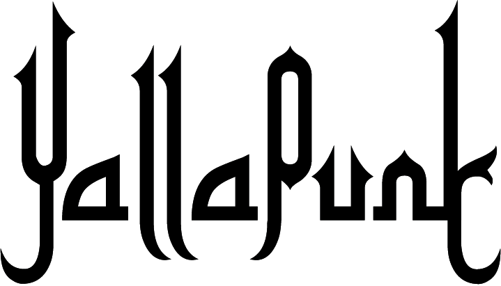

News
(current)
Shop
Calendar
Directions
About Us
06/29/2017 YallaPunk Fest and Conference in Philly
by Digital Wheatpaste
08/03/2017 Tickets are now on sale for the first-ever YallaPunk music and culture festival
by Albert hong for Generocity
08/22/2017 YallaPunk festival debuts to reclaim MENA identity in Philly and beyond
by Nadia Eldemerdash for Broad Street Review
08/28/2017 PUNK OUT MENA-STYLE by Annie McDonough for the Philadelphia Citizen
08/28/2017 Rock Out with YallaPunk Festival in North Philly September 1-3!
by Yali Perez for Geekadelphia
08/31/2017 Philly’s first Arab-American punk rock festival takes over Fishtown this weekend
by Danya Henninger
08/31/2017 Philly gets its first Arab punk festival
by Peter Crimmins for WHYY
09/01/2017 Yalla Habibi! Philadelphia’s first ever Middle Eastern punk festival, YallaPunk, starts tonight
by Yoni Kroll for WXPN
09/05/2017 At YallaPunk Festival, young Arab Americans throw off stereotypes
by Emily Cohen for WHYY
09/05/2017 YallaPunk draws Middle Eastern and North African creatives
by Angela Gervasi for The Temple News